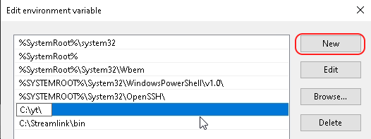
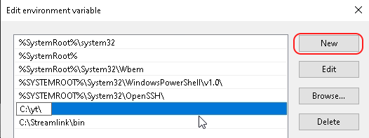
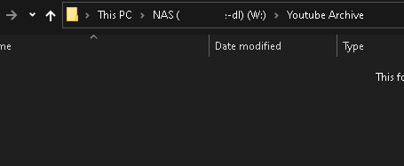
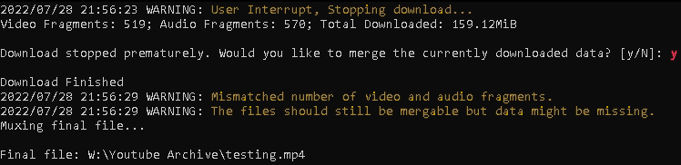
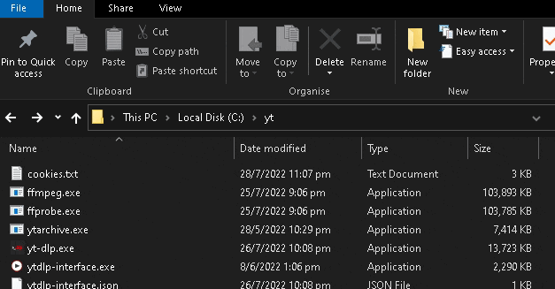

Personally I prefer to keeping them all in the same place, for example: C:\yt\
Step 2: Set up PATH to the folder (To run the exe from any location)
Typing "Environment" in the startmenu should bring up "Edit System Environment Varibles".
If not, Right-click the Windows icon > "System" > "Related Settings" (to the right)> "Advanced System Settings" > "Environment Variables" > PATH (the "system variable" one in the lower table)
Add a new entry with the path in step 2.
 

Archiving ongoing streams using ytarchive
Browse to the folder you want to save the vod to. Type "cmd" in the address bar to open the command prompt.

Type in the following commands and follow the prompt:
ytarchive https://www.youtube.com/watch?v=######
Or the following skip the prompt:
ytarchive -w https://www.youtube.com/watch?v=###### best
(-w: wait for scheduled time, best: best quality. You can replace these with -r 30 (poll every 30s), and list preferred bitrate if you a smaller file - include "best" as a failsafe in case the prefered bitrate is not avalible, eg: 720/720p60/best)
Monito a channel for livestreams
You can monitor a channel for any livestreams, even before a waiting room was created by using the following commands with a /live added to the channel url
ytarchive --monitor-channel https://www.youtube.com/channel/######/live best
As usual, you can specify the preferred bitrate instead of using best.
Once it finishes downloading and merging a stream, it will go right back to monitoring for the next stream - make sure you keep an eye on the storage space if you plan to leave this running 24/7.
Stop recording before stream ends:
If you want to stop an ongoing archive(eg, your laptop is out of battery and your oshi has left the stream), press Ctrl+C, and y on the prompt for merging files.
Make sure you leave some leeway to make sure the download have caught up to the parts you want to keep.

Downloading live streams from the start (makeshift ytarchive)
If, for whatever reason, you cannot get ytarchive working and desperately need to download a livestream that has already begun, you can actually use yt-dlp to do it.
However, yt-dlp will take much longer to notice a stream has ended, and it does not offer to merge a partial download for you if you want to stop the download before it decided it is finished (you can still manually merge the files).
yt-dlp --live-from-start https://www.youtube.com/watch?v=######
Config file for default settings
If you can't be bothered to type in your preferred settings every time you use yt-dlp, you can save your default settings by creating a config.txt
Go to %appdata% and create the config file under %appdata%/yt-dlp/config.txt
Inside the file, put in what the settings you want yt-dlp to always use unless otherwise specified.
For example, here is my file to (1) always using the cookies file in my main folder, (2) start livestreams from the begining, and (3) default to the best avalible mp4 (and skip the mkv-only formats):
--cookies "C:/yt/cookies.txt" --live-from-start -f 'bestvideo[ext=mp4]+bestaudio[ext=m4a]'
